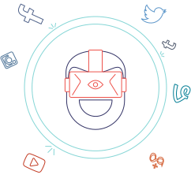
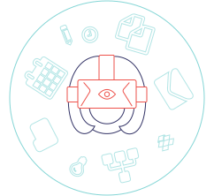

La réalité virtuelle est connue pour le jeu vidéo. Elle permet d'immerger un joueur dans un jeu, de façon à ce que la perception de cet univers soit la plus réaliste possible.
Quid de celle-ci dans un contexte de travail ?
sSpace est un environnement de travail en ligne en réalité virtuelle. À l'instar du jeu vidéo, sSpace constitue une interface de travail en 3D stéréoscopique, mêlée à la vision humaine.

Objectif #1
Objectif #1
Maîtriser la distraction au travail.

Objectif #2